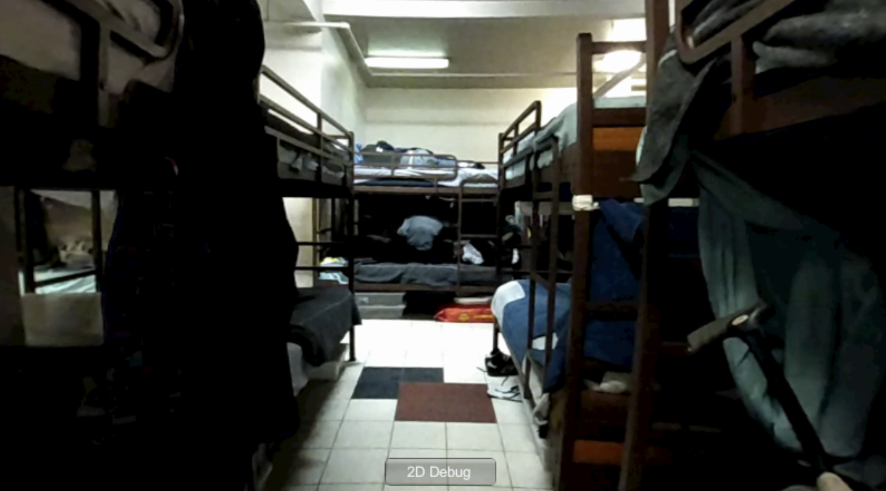

Alison and Amy visited the William Booth Center on Tuesday to capture footage of the non-emergency shelter. Amy refilmed the eviction scene. Amy also worked on creating the rendered experience for the museum scene where users can look at different homelessness resources and videos. Alison found resources and videos for the museum scene.



Aaron stitched together the video clips and audio clips for the park and emergency shelter, while Alison stitched together the clips for the non-emergency shelter. Aaron also fixed our menu navigation after we had an unfortunate project import that deleted a bunch of our assets. Erika worked on improving the user experience for the video clips, increasing resolution and decreasing distortion.
Amy and Erika led the process of updating our script so that there was second person narration, while we all edited it. Erika also lended her voice and recorded clips of reading the narration.
As usual, our new videos are too big to put in our github repo. The code changes are mostly updates to timing and inserting narration into the project. The museum scene that Amy made is also a substantial code addition, and is the scene FS_FINAL in our repo.
The biggest change in our ideas this week is we updated our project to include second person narration throughout. We weren’t sure that this would feel natural, but we pulled portions of the script from actual interviews and articles we’ve found through our research. It ended up being really successful and making our whole experience feel a lot more cohesive! We need to shorten the experience by a couple minutes, so we’ll continue to iterate on our script, and adjust the scenes we have accordingly.
Next week we’ll all continue to update our storyline and polish the mechanics of our experience. Amy will continue to flesh out the museum scene, and will refilm the necessary eviction scene videos. Aaron will add background music to the entire experience and increase the volume of the audio clips. He will also see if adding first person video clips would negatively affect the flow and general experience. Erika will work on shortening the narration clips and re-recording the audio. She will also start working on assets that we will hand out during demo day with information and action items. Alison will improve the quality of the videos by fixing the video distortion and adding blurring around the sharp edges.
The only possible blocking issue is we’ve had trouble figuring out how to fix the distortion of the videos. We’ve tried a few things that didn’t work but don’t feel stuck yet, so we’ll continue to try some more.